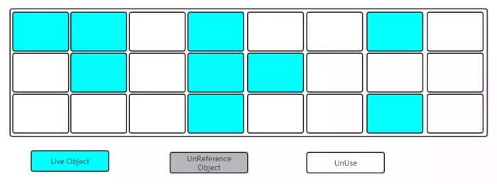
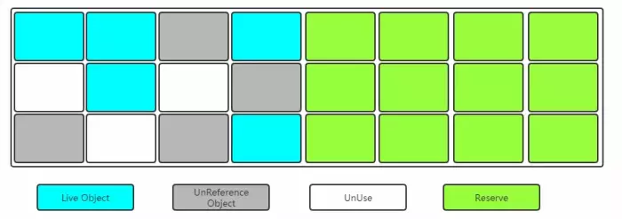
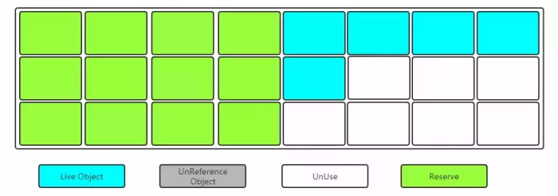
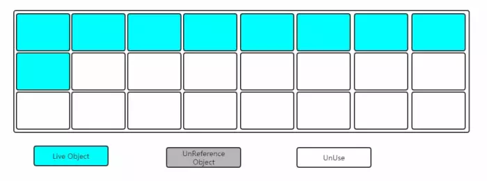
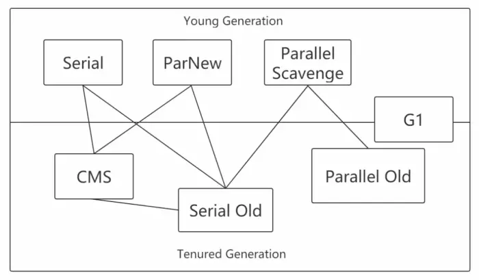
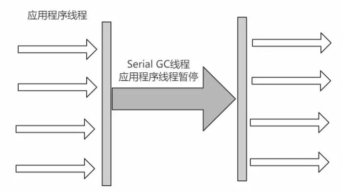
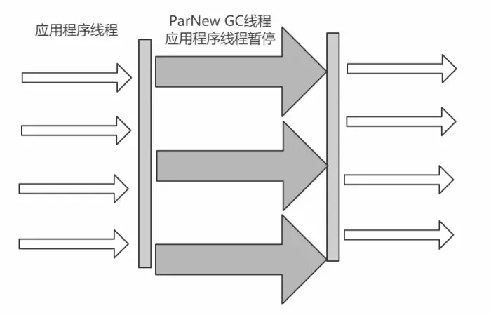
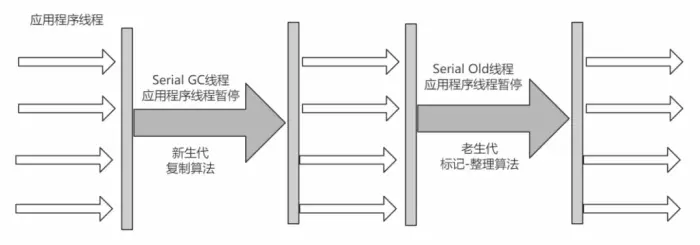
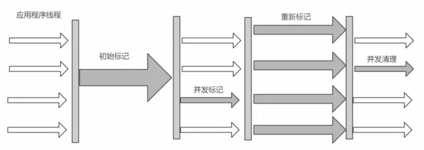
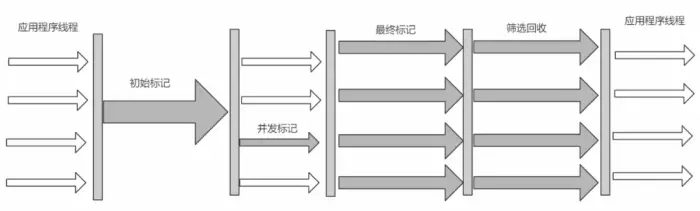

原文连接:https://www.cnblogs.com/xueSpring/p/11589305.html
扩展阅读：JVM从入门开始深入每一个底层细节
六、内存模型
6.1、内存模型与运行时数据区
Java虚拟机在执行Java程序的过程中会把它所管理的内存划分为若干不同数据区域。
Java内存模型的主要目标是定义程序中各个变量的访问规则，即在虚拟机中将变量存储到内存和从内存中取出变量这样的底层细节。
这里所讲的主内存、工作内存与Java内存区域中的Java堆、栈、方法区等并不是同一层次的内存划分，这两者基本上是没有关系的。如果两者一定要勉强对应起来，从变量、主内存、工作内存的定义看，主内存主要对应于Java堆中的对象实例数据部分，而工作内存则对应了虚拟机栈中部分区域。
上面对运行时数据区描述了很多，其实重点存储数据的是堆和方法区(非堆)，所以内存的设计也着重从这两方面展开(注意这两块区域都是线程共享的)。
对于虚拟机栈，本地方法栈，程序计数器都是线程私有的。
6.2 图解

一块是非堆区，一块是堆区。
堆区分为两大块，一个是Old区，一个是Young区。
Young区分为两大块，一个是Survivor区（S0+S1），一块是Eden区。Eden:S0:S1=8:1:1
S0和S1一样大，也可以叫From和To。
根据之前对于Heap的介绍可以知道，一般对象和数组的创建会在堆中分配内存空间，关键是堆中有这么多区域，那一个对象的创建到底在哪个区域呢？
6.3 对象创建所在区域
一般情况下，新创建的对象都会被分配到Eden区，一些特殊的大的对象会直接分配到Old区。
比如有对象A，B，C等创建在Eden区，但是Eden区的内存空间肯定有限，比如有100M，假如已经使用了100M或者达到一个设定的临界值，这时候就需要对Eden内存空间进行清理，即垃圾收集(Garbage Collect)，这样的GC我们称之为Minor GC，Minor GC指得是Young区的GC。
经过GC之后，有些对象就会被清理掉，有些对象可能还存活着，对于存活着的对象需要将其复制到Survivor区，然后再清空Eden区中的这些对象。
6.4 Survivor区详解
由图解可以看出，Survivor区分为两块S0和S1，也可以叫做From和To。
在同一个时间点上，S0和S1只能有一个区有数据，另外一个是空的。
接着上面的GC来说，比如一开始只有Eden区和From中有对象，To中是空的。
此时进行一次GC操作，From区中对象的年龄就会+1，我们知道Eden区中所有存活的对象会被复制到To区，From区中还能存活的对象会有两个去处。
若对象年龄达到之前设置好的年龄阈值，此时对象会被移动到Old区，没有达到阈值的对象会被复制到To区。
此时Eden区和From区已经被清空(被GC的对象肯定没了，没有被GC的对象都有了各自的去处)。
这时候From和To交换角色，之前的From变成了To，之前的To变成了From。
也就是说无论如何都要保证名为To的Survivor区域是空的。
Minor GC会一直重复这样的过程，知道To区被填满，然后会将所有对象复制到老年代中。
6.5 Old区详解
从上面的分析可以看出，一般Old区都是年龄比较大的对象，或者相对超过了某个阈值的对象。
在Old区也会有GC的操作，Old区的GC我们称作为Major GC，每次GC之后还能存活的对象年龄也会+1，如果年龄超过了某个阈值，就会被回收。
6.6 对象的一辈子理解
我是一个普通的Java对象,我出生在Eden区,在Eden区我还看到和我长的很像的小兄弟,我们在Eden区中玩了挺长时间。有一天Eden区中的人实在是太多了,我就被迫去了Survivor区的“From”区,自从去了Survivor区,我就开始漂了,有时候在Survivor的“From”区,有时候在Survivor的“To”区,居无定所。直到我18岁的时候,爸爸说我成人了,该去社会上闯闯了。
于是我就去了年老代那边,年老代里,人很多,并且年龄都挺大的,我在这里也认识了很多人。在年老代里,我生活了20年(每次GC加一岁),然后被回收。（这样举例是不是非常容易理解？）
6.7 常见问题
如何理解Minor/Major/Full GC
-
Minor GC:新生代
-
Major GC:老年代
-
Full GC:新生代+老年代
为什么需要Survivor区?只有Eden不行吗？
-
如果没有Survivor,Eden区每进行一次Minor GC,存活的对象就会被送到老年代。这样一来，老年代很快被填满,触发Major GC(因为Major GC一般伴随着Minor GC,也可以看做触发了Full GC)。
-
老年代的内存空间远大于新生代,进行一次Full GC消耗的时间比Minor GC长得多。
-
执行时间长有什么坏处?频发的Full GC消耗的时间很长,会影响大型程序的执行和响应度。可能你会说，那就对老年代的空间进行增加或者较少咯。
-
假如增加老年代空间，更多存活对象才能填满老年代。虽然降低Full GC频率，但是随着老年代空间加大,一旦发生Full GC,执行所需要的时间更长。
-
假如减少老年代空间，虽然Full GC所需时间减少，但是老年代很快被存活对象填满,Full GC频率增加。
所以Survivor的存在意义,就是减少被送到老年代的对象,进而减少Full GC的发生,Survivor的预筛选保证,只有经历16次Minor GC还能在新生代中存活的对象,才会被送到老年代。
为什么需要两个Survivor区？
最大的好处就是解决了碎片化。也就是说为什么一个Survivor区不行?第一部分中,我们知道了必须设置Survivor区。假设现在只有一个Survivor区,我们来模拟一下流程:
刚刚新建的对象在Eden中,一旦Eden满了,触发一次Minor GC,Eden中的存活对象就会被移动到Survivor区。这样继续循环下去,下一次Eden满了的时候,问题来了,此时进行Minor GC,Eden和Survivor各有一些存活对象,如果此时把Eden区的存活对象硬放到Survivor区,很明显这两部分对象所占有的内存是不连续的,也就导致了内存碎片化。
永远有一个Survivor space是空的,另一个非空的Survivor space无碎片。
新生代中Eden:S1:S2为什么是8:1:1？
新生代中的可用内存：复制算法用来担保的内存为9：1
可用内存中Eden：S1区为8：1
即新生代中Eden:S1:S2 = 8：1：1
p70复制算法
现代的商业虚拟机都采用这种收集算法来回收新生代，IBM公司的专门研究表明，新生代中的对象大概98%是“朝生夕死”的，所以并不需要按照1：1的比例来划分内存空间，而是将新生代内存分为一块较大的Eden空间和两块较小的Survivor空间，每次使用Eden和其中一块Survivor，当回收时，将Eden和Survivor中还存活着的对象一次性地复制到另外一块Survivor空间上，最后清理掉Eden和刚才用过的Survivor空间。HotSpot虚拟机默认Eden和Survivor的大小比例是8：1，也就是每次新生代中可用内存空间为整个新生代容量的90%（80%+10%）。如果新生代经过回收后，存活的对象超过10%，这样就导致另外一块Survivor空间没有足够空间存放存活对象。此时，这些对象将直接通过分配担保机制进入老年代。
七、Garbage Collect(垃圾回收)
之前说堆内存中有垃圾回收，比如Young区的Minor GC，Old区的Major GC，Young区和Old区的Full GC。但是对于一个对象而言，怎么确定它是垃圾？是否需要被回收？怎样对它进行回收？等等这些问题我们还需要详细探索。
因为Java是自动做内存管理和垃圾回收的，如果不了解垃圾回收的各方面知识，一旦出现问题我们很难进行排查和解决，自动垃圾回收机制就是寻找Java堆中的对象，并对对象进行分类判别，寻找出正在使用的对象和已经不会使用的对象，然后把那些不会使用的对象从堆上清除 。
P61关于运行时数据区各个部门的垃圾回收问题
程序计数器、 虚拟机栈、 本地方法栈3个区域随线程而生，随线程而灭；栈中的栈帧随着方法的进入和退出而有条不紊地执行着出栈和入栈操作。 每一个栈帧中分配多少内存基本上是在类结构确定下来时就已知的（尽管在运行期会由JIT编译器进行一些优化，但在本章基于概念模型的讨论中，大体上可以认为是编译期可知的），因此这几个区域的内存分配和回收都具备确定性，在这几个区域内就不需要过多考虑回收的问题，因为方法结束或者线程结束时，内存自然就跟随着回收了。 而Java堆和方法区则不一样，一个接口中的多个实现类需要的内存可能不一样，一个方法中的多个分支需要的内存也可能不一样，我们只有在程序处于运行期间时才能知道会创建哪些对象，这部分内存的分配和回收都是动态的，垃圾收集器所关注的是这部分内存。
P68 回收方法区
很多人认为方法区（或者HotSpot虚拟机中的永久代）是没有垃圾收集的，Java虚拟机规范中确实说过可以不要求虚拟机在方法区实现垃圾收集，而且在方法区进行垃圾收集的“性价比”一般比较低：在堆中，尤其是在新生代中，常规应用进行一次垃圾收集一般可以回收70%~95%的空间，而永久代的垃圾收集效率远低于此。
永久代的垃圾收集主要回收两部分内容：废弃常量和无用的类。回收废弃常量与回收Java堆中的对象非常类似。以常量池中字面量的回收为例，假如一个字符串“abc”已经进入了常量池中，但是当前系统没有任何一个String对象是叫做“abc”的，换句话说是没有任何String对象引用常量池中的“abc”常量，也没有其他地方引用了这个字面量，如果在这时候发生内存回收，而且必要的话，这个“abc”常量就会被系统“请”出常量池。常量池中的其他类（接口）、方法、字段的符号引用也与此类似。
7.1 如何确定一个对象是垃圾？
要想进行垃圾回收，得先知道什么样的对象是垃圾。
7.1.1 引用计数法
对于某个对象而言，只要应用程序中持有该对象的引用，就说明该对象不是垃圾，如果一个对象没有任何指针对其引用，它就是垃圾。
7.1.2 可达性分析
通过GC Root的对象，开始向下寻找，看某个对象是否可达；
能作为GC Root:类加载器、Thread、虚拟机栈的本地变量表、static成员、常量引用、本地方法栈的变量等。
-
虚拟机栈（栈帧中的本地变量表）中引用的对象。
-
方法区中类静态属性引用的对象。
-
方法区中常量引用的对象。
-
本地方法栈中JNI（即一般说的Native方法）引用的对象。
7.2 垃圾收集算法已经能够确定一个对象为垃圾之后，接下来要考虑的就是回收，怎么回收呢？得要有对应的算法，下面介绍常见的垃圾回收算法。
7.2.1 标记-清除(Mark-Sweep)
标记：找出内存中需要回收的对象，并且把它们标记出来。
此时堆中所有的对象都会被扫描一遍，从而才能确定需要回收的对象，比较耗时。

清除：清除掉被标记需要回收的对象，释放出对应的内存空间；

缺点：
标记清除之后会产生大量不连续的内存碎片，空间碎片太多可能会导致以后在程序运行过程中需要分配较大对象时，无法找到足够的连续内存而不得不提前触发另一次垃圾收集动作。
(1)标记和清除两个过程都比较耗时，效率不高
(2)会产生大量不连续的内存碎片，空间碎片太多可能会导致以后在程序运行过程中需要分配较大对象时，无法找到足够的连续内存而不得不提前触发另一次垃圾收集动作。
7.2.2 复制(Copying)
将内存划分为两块相等的区域，每次只使用其中一块，如下图所示：

当其中一块内存使用完了，就将还存活的对象复制到另外一块上面，然后把已经使用过的内存空间一次清除掉。

缺点：空间利用率降低。
7.2.3 标记-整理(Mark-Compact)
复制收集算法在对象存活率较高时就要进行较多的复制操作，效率将会变低。更关键的是，如果不想浪费50%的空间，就需要有额外的空间进行分配担保，以应对被使用的内存中所有对象都有100%存活的极端情况，所以老年代一般不能直接选用这种算法。标记过程仍然与"标记-清除"算法一样，但是后续步骤不是直接对可回收对象进行清理，而是让所有存活的对象都向一端移动，然后直接清理掉端边界以外的内存。
其实上述过程相对"复制算法"来讲，少了一个"保留区"
让所有存活的对象都向一端移动，清理掉边界意外的内存。

7.3 分代收集算法
既然上面介绍了3中垃圾收集算法，那么在堆内存中到底用哪一个呢？
P72分代收集算法
为了增加垃圾回收的效率，JVM会根据对象存活周期的不同将内存分为几块，堆中分为新生代和老年代。这样可以根据各个年代的特点采用最适当的收集算法。在新生代中，每次垃圾收集时都发现有大批对象死去，只有少量存活，那就选用复制算法，只需要付出少量存活对象的复制成本就可以完成收集。而老年代中因为对象存活率高、没有额外空间对它进行分配担保，就必须使用"标记-清除"或者"标记-整理"算法来进行回收。
小结：
Young区：复制算法(对象在被分配之后，可能生命周期比较短，Young区复制效率比较高)
Old区：标记清除或标记整理(Old区对象存活时间比较长，复制来复制去没必要，不如做个标记再清理)
7.4 垃圾收集器
如果说收集算法是内存回收的方法论，那么垃圾收集器就是内存回收的具体实现。

7.4.1 Serial收集器
Serial收集器是最基本、发展历史最悠久的收集器，曾经（在JDK1.3.1之前）是虚拟机新生代收集的唯一选择。
它是一种单线程收集器，不仅仅意味着它只会使用一个CPU或者一条收集线程去完成垃圾收集工作，更重要的是其在进行垃圾收集的时候需要暂停其他线程。
优点：简单高效，拥有很高的单线程收集效率
缺点：收集过程需要暂停所有线程
算法：复制算法
适用范围：新生代
应用：Client模式下的默认新生代收集器

7.4.2 ParNew收集器
可以把这个收集器理解为Serial收集器的多线程版本。
优点：在多CPU时，比Serial效率高。
缺点：收集过程暂停所有应用程序线程，单CPU时比Serial效率差。
算法：复制算法
适用范围：新生代
应用：运行在Server模式下的虚拟机中首选的新生代收集器

7.4.3 Parallel Scavenge收集器
Parallel Scavenge收集器是一个新生代收集器，它也是使用复制算法的收集器，又是并行的多线程收集器，看上去和ParNew一样，但是Parallel Scanvenge更关注`系统的吞吐量`。
-
吞吐量=运行用户代码的时间/(运行用户代码的时间+垃圾收集时间)
-
比如虚拟机总共运行了100分钟，垃圾收集时间用了1分钟，吞吐量=(100-1)/100=99%。
-
若吞吐量越大，意味着垃圾收集的时间越短，则用户代码可以充分利用CPU资源，尽快完成程序的运算任务。
-XX:MaxGCPauseMillis控制最大的垃圾收集停顿时间，
-XX:GCRatio直接设置吞吐量的大小。
7.4.4 Serial Old收集器
Serial Old收集器是Serial收集器的老年代版本，也是一个单线程收集器，不同的是采用"标记-整理算法"，运行过程和Serial收集器一样。

7.4.5 Parallel Old收集器
Parallel Old收集器是Parallel Scavenge收集器的老年代版本，使用多线程和"标记-整理算法"进行垃圾回收。
吞吐量优先
7.4.6 CMS收集器
CMS(Concurrent Mark Sweep)收集器是一种以获取`最短回收停顿时间`为目标的收集器。
采用的是"标记-清除算法",整个过程分为4步
(1)初始标记 CMS initial mark
标记GC Roots能关联到的对象 Stop The World--->速度很快
(2)并发标记 CMS concurrent mark
进行GC Roots Tracing
(3)重新标记 CMS remark
修改并发标记因用户程序变动的内容 Stop The World
(4)并发清除 CMS concurrent sweep
由于整个过程中，并发标记和并发清除，收集器线程可以与用户线程一起工作，所以总体上来说，CMS收集器的内存回收过程是与用户线程一起并发地执行的。
优点：并发收集、低停顿
缺点：产生大量空间碎片、并发阶段会降低吞吐量

7.4.7 G1收集器
G1收集器在JDK 7正式作为商用的收集器。与前几个收集器相比，G1有以下特点
P84 G1收集器
-
并行与并发
-
分代收集（仍然保留了分代的概念）
-
空间整合（整体上属于“标记-整理”算法，不会导致空间碎片）
-
可预测的停顿（比CMS更先进的地方在于能让使用者明确指定一个长度为M毫秒的时间片段内，消耗在垃圾收集上的时间不得超过N毫秒）
使用G1收集器时，Java堆的内存布局与就与其他收集器有很大差别，它将整个Java堆划分为多个大小相等的独立区域（Region），虽然还保留有新生代和老年代的概念，但新生代和老年代不再是物理隔离的了，它们都是一部分Region（不需要连续）的集合。
工作过程可以分为如下几步：
-
初始标记（Initial Marking）
标记以下GC Roots能够关联的对象，并且修改TAMS的值，需要暂停用户线程
-
并发标记（Concurrent Marking）
从GC Roots进行可达性分析，找出存活的对象，与用户线程并发执行
-
最终标记（Final Marking）
修正在并发标记阶段因为用户程序的并发执行导致变动的数据，需暂停用户线程
-
筛选回收（Live Data Counting and Evacuation）
对各个Region的回收价值和成本进行排序，根据用户所期望的GC停顿时间制定回收计划

7.4.8 垃圾收集器分类
-
串行收集器->Serial和Serial Old
只能有一个垃圾回收线程执行，用户线程暂停。`适用于内存比较小的嵌入式设备`。
-
并行收集器[吞吐量优先]->Parallel Scanvenge、Parallel Old
多条垃圾收集线程并行工作，但此时用户线程仍然处于等待状态。`适用于科学计算、后台处理等若交互场景`。
-
并发收集器[停顿时间优先]->CMS、G1
用户线程和垃圾收集线程同时执行(但并不一定是并行的，可能是交替执行的)，垃圾收集线程在执行的时候不会停顿用户线程的运行。`适用于相对时间有要求的场景，比如Web`。
7.4.9 常见问题
吞吐量和停顿时间
停顿时间->垃圾收集器 `进行` 垃圾回收终端应用执行响应的时间
吞吐量->运行用户代码时间/(运行用户代码时间+垃圾收集时间)
停顿时间越短就越适合需要和用户交互的程序，良好的响应速度能提升用户体验；
高吞吐量则可以高效地利用CPU时间，尽快完成程序的运算任务，主要适合在后台运算而不需要太多交互的任务。
小结:这两个指标也是评价垃圾回收器好处的标准，其实调优也就是在观察者两个变量。
如何选择合适的垃圾收集器
* 优先调整堆的大小让服务器自己来选择
* 如果内存小于100M，使用串行收集器
* 如果是单核，并且没有停顿时间要求，使用串行或JVM自己选
* 如果允许停顿时间超过1秒，选择并行或JVM自己选
* 如果响应时间最重要，并且不能超过1秒，使用并发收集器
对于G1收集
JDK 7开始使用，JDK 8非常成熟，JDK 9默认的垃圾收集器，适用于新老生代。
是否使用G1收集器？
（1）50%以上的堆被存活对象占用
（2）对象分配和晋升的速度变化非常大
（3）垃圾回收时间比较长
如何开启需要的垃圾收集器这里JVM参数信息的设置大家先不用关心，下一章节会详细写到。
（1）串行
-XX：+UseSerialGC
-XX：+UseSerialOldGC
（2）并行(吞吐量优先)：
-XX：+UseParallelGC
-XX：+UseParallelOldGC
（3）并发收集器(响应时间优先)
-XX：+UseConcMarkSweepGC
-XX：+UseG1GC
如果觉得本文有用，推荐顶一顶，可以让更多的人能够看到！
欢迎关注公众号：“Java架构师学习”
你会喜欢的！